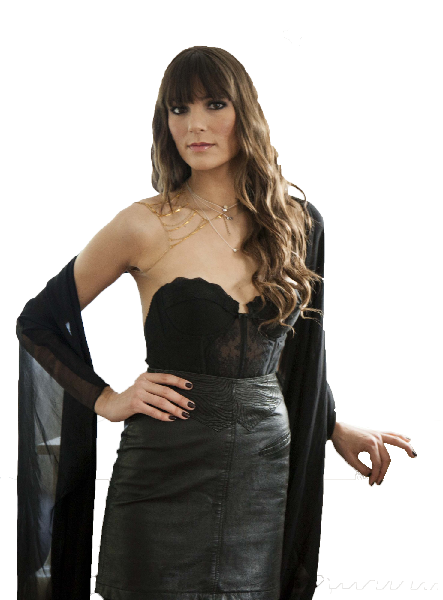
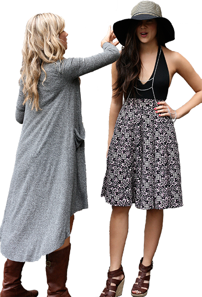

Fashion inspiration is everywhere -- in glossy magazine editorials, in real life, on street style blogs. We want to know what -- and who -- inspires you.
Join our crowdsourced collective of style.
How it all works
You submit photos of high fashion looks found in magazines, real life, or on your favorite blog/website that you would like to own.
Submitted looks are reviewed and curated by a resident Style Expert.
Looks that make the cut are published to the website. We only publish the creme de la creme.
You and other users can then re-create each curated look by contributing links to purchase clothing items that are similar, or "parallel" to the original.
Shop away!


LucyLA-based stylist and fashion PR expert. Dressed the likes of M83’s Morgan Kibby. Co-founder of Rusted Revolution.
Will - Co-founder of meteoric New York streetwear brand XXBC.
Marylouise & Vanessa - DJ duo and avant garde designers. Rihanna, Katy Perry, and Victoria Beckham have worn their creations.
Shelby - Up-and-coming fashion designer based in Chicago.
Leandra - Powerhouse fashion blogger. Better known as the Man Repeller.
Sophia - Founder of Nasty Gal.
Brad - Celebrity stylist and reality T.V. personality.